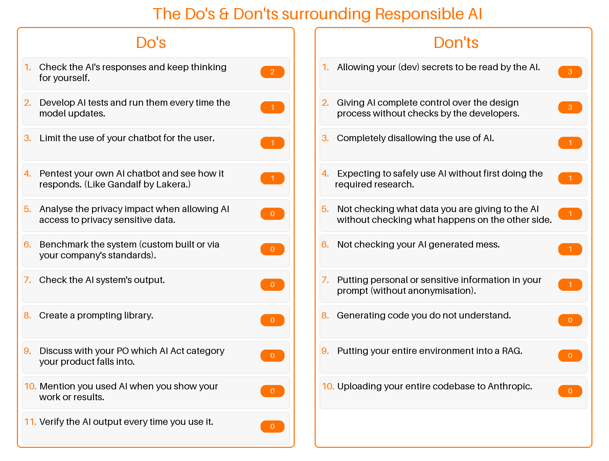
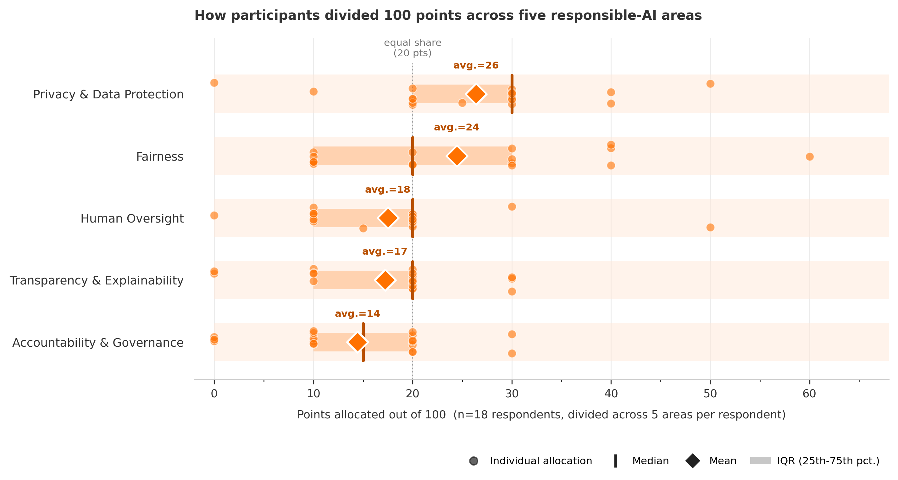

Responsible use of AI
I was invited by HybrIT, an IT consultancy company, to come give a talk about the responsible use of AI. In my talk, I touched on 5 important areas of responsible AI: Privacy & Data Protection, Accountability & Governance, Fairness, Transparency & Explainability, and Human Oversight. For each area, I touched on what to consider when developing and deploying AI solutions.
Near the end of the session, we brainstormed about specific do's and don'ts when deploying AI solutions. We also discussed a concrete implementation and discussed how we can convey responsibility-related risks and challenges to management. The results of these interactive parts of the session are expanded upon below.
If you attended the talk, thank you for your participation. I hope you learned something. The slides can be downloaded here. A White paper on this same topic that highlights the 5 discussed areas of responsible AI can be found here.
Brainstorming results

Application results
The HR department of your company wants to hire new employees. When a lot of people apply, this is a time-consuming process. They want to use an AI system to do a preliminary screening of the CVs, to narrow down the list of participants. This would save them a lot of time.
You are tasked to develop this AI solution.
There was also a small discussion about the difference between Privacy & Data Protection and Fairness with respect to handling sensitive personal data. We unpacked this and found that the cyber security of this personal data would fall under Privacy & Data Protection, while the use of this data with respect to treating applicants differently would fall under Fairness.
What is perhaps interesting is that Accountability & Governance appears all the way at the bottom. People considered this the least important of the five areas. When discussed, we discovered that the participants were not aware of this application being a potential forbidden or high-risk application with respect to the EU AI Act. Such a system would not be allowed to make final hiring decisions (without human oversight). The participants were not aware of this potential risk.

What else should you keep in mind?
We then discussed some other things to keep in mind when developing such a system. This was asked in the form of an open question. One of the participants wrote down "Who will be responsible for checking if the system works correctly". This resonated with the group. The human oversight to verify the system's decisions is very important. Furthermore, if it takes more time to manually check the AI decisions, perhaps you would be better off simply filtering through the CVs manually. One participant mentioned that even taking the time to manually anonymise the CVs would potentially take more time than filtering them by hand. This raises the point of AI not always being more efficient or practical as compared to a different approach.A different participant mentioned cost. Cost is important for multiple reasons. For example, there are the costs of developing, building, and maintaining such a system. Would the costs of this process outweigh the potential benefits? Similarly, if we have to take the extra time to anonymise data or be compliant with the EU AI Act, it could potentially cost more than paying someone to go through the CVs by hand.
How do you communicate this to your product owner?
Lastly, we discussed how one might convince their product owner to pay attention to their responsibilities regarding AI. Unfortunately, the group mentioned that simply informing them it is the most ethical thing to do will likely not yield any good results. One can dream, but most of the time the best way is likely frame the discussion in financial terms. For example: "You can either spend $10,000 on me adding AI Act compliance into our solution, or we could risk a $50,000 fine for non-compliance and then still have to build it after.". The point here would be to inform the product owner of the potential risks. Expressing these risks in terms of monetary value would likely be most effective.Another participant highlighted the communication barrier they often experience between developers and product owners, where both seem to have their own language. They suggested to put their concerns into their own words into an AI chatbot and have it translate their language that a product owner can more easily understand.
Final thoughts
I want to again thank everyone for attending. Below you can find some useful links to the slides, a white paper I wrote on this same topic, and some socials.